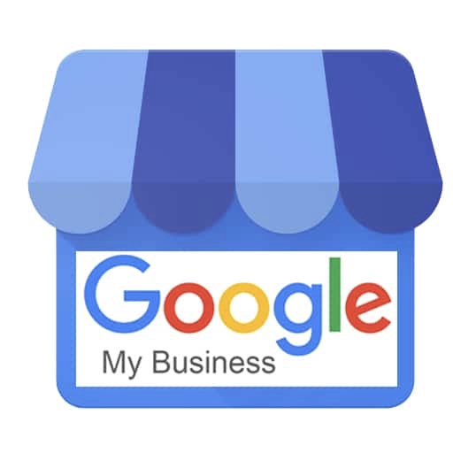

Google my business mon compte: ce qu'il faut savoir en 2021.

Bien référencer son entreprise est devenu crucial en 2021. Google met à disposition pour les entreprises sa plateforme Google My Business, souvent confondue avec Google Map. La géolocalisation de Google Map n’est qu’une des prestations offertes par Google My Business. Apprenez à configurer votre compte Google My Business pour tirer pleinement profit de cet outil incroyable avec notre guide ultime.
Google my business c'est quoi ?
GMB est un outil gratuit proposé par Google qui vous permet de gérer votre entreprise dans les résultats de recherche Google et sur Google Map. Cela inclut l'ajout du nom de votre entreprise, son emplacement, ses horaires, le suivi et la réponse aux commentaires des clients, l'ajout de photos. Vous avez la possibilité d’accéder à des statistiques précises sur où et comment les gens recherchent votre entreprise.
Plus largement, cela fait partie de la stratégie de référencement local par laquelle toute entreprise doit commencer. Votre inscription à Google My Business est un excellent endroit pour concentrer vos premiers efforts. Après tout, lorsque les gens recherchent un produit ou un service près de chez eux, ils sont généralement très près d'effectuer un achat. Savez-vous qu’une personne sur deux qui effectue une recherche locale(pensez à "réparation de montre près de chez moi") se rend dans un magasin ce jour-là.
Il est donc important que les informations sur votre entreprise qui apparaissent lors de la recherche sur Google soient aussi précises, complètes et optimisées que possible. Pour savoir comment créer votre compte Google My Business, vérifier votre entreprise et rendre son référencement aussi solide que possible, lisez ce qui suit.
Les 8 étapes pour créer son compte Google My Business
Étape 1
Connectez-vous au compte Google que vous souhaitez associer à votre entreprise (ou créez un compte Google si vous n'en avez pas déjà un).
Étape 2
Allez sur google.com/business et sélectionnez "Gérer mon profil" dans le coin supérieur droit.
Étape 3
Entrez le nom de votre entreprise.
Étape 4
Choisissez votre catégorie d'entreprise. Essayez de choisir la catégorie la plus précise possible. En fait, vous indiquez à Google quel type de clients doit voir votre fiche d'entreprise.
Étape 5
Saisissez l’adresse de votre entreprise ou de votre activité professionnelle.

Étape 6
Si vous vous rendez chez vos clients, plutôt que de les faire venir chez vous, cochez la case "Je livre des biens et des services à mes clients". Et si vous travaillez chez vous ou à une autre adresse que vous ne souhaitez pas voir affichée publiquement, cochez la case "Cacher mon adresse (ce n'est pas un magasin). Afficher seulement la région". Enfin, sélectionnez votre zone de livraison, ou la zone de service sur laquelle vous exercez.

Étape 7
Ajoutez le numéro de téléphone et le site web de votre entreprise. Il est préférable d'ajouter un site web plutôt qu'une page Facebook en terme de référencement.
Étape 8
Choisissez une option de vérification. Si vous n'êtes pas encore prêt à vérifier votre entreprise, cliquez sur "Essayez une autre méthode" → "Plus tard". Google vérifie que vous êtes bien propriétaire de votre établissement, à l’adresse indiquée.
Comment vérifier son compte Google My Business ?
Il y a plusieurs façons de vérifier votre inscription au GMB :
- Par courrier
- Par appel téléphonique
- Par mail
- Par sms
Détaillons cela ensemble
Par courrier
- 1. Connectez vous à votre compte Google My Business.
- 2. Vérifier que l'adresse soit correcte.
- 3. Cliquez sur "Courrier".
- 4. Une fois que vous avez reçu la lettre (5jours) connectez-vous à votre compte.
- 5. Dans le champ "Code", saisissez le code de vérification à cinq chiffres de votre courrier.
Si votre lettre n'apparaît jamais ou si vous la perdez, vous pouvez demander un nouveau code en vous connectant à Google My Business et en cliquant sur le bandeau bleu "Demander un autre code" en haut de l'écran.
Par appel téléphonique
- 1. Connectez vous à votre compte Google My Business.
- 2. Vérifier que le numéro de téléphone est correct.
- 3. Entrez le code de vérification que vous venez de recevoir dans l'appel.
Par sms
- 1. Connectez vous à votre compte Google My Business.
- 2. Vérifier que le numéro de téléphone est correct.
- 3. Entrez le code de vérification figurant dans le sms que vous venez de recevoir.
Par Email
Google permet à certaines entreprises de vérifier leur localisation E-mail. Si vous êtes éligible, vous verrez l'option "Vérifier par e-mail" lorsque vous lancez le processus de vérification.
- 1. Connectez vous à votre compte Google My Business.
- 2. Vérifiez que votre adresse électronique est correcte, puis choisissez "Vérifier par courrier électronique".
- 3. Allez dans votre boîte de réception, ouvrez l'e-mail de Google My Business, et cliquez sur le bouton de vérification dans l'e-mail.
Comment optimiser sa fiche Google My Business ?
La description
Google vous permet d'ajouter une description de 1000 caractères. N'hésitez pas à présenter votre établissement et vos prestations de la manière la plus détaillée. Les descriptions manquantes entraînent une baisse des consultations.
Les photos
Selon Google, les entreprises ayant des photos voient 35 % de clics en plus sur leur site web et 42 % de demandes d'itinéraires en plus dans Google Maps.
Les photos doivent avoir au moins 720 pixels de large par 720 pixels de haut et être des fichiers JPG ou PNG.
Vous ne savez pas combien de photos ajouter, ni de quoi elles doivent être composées ?
Ajoutez des photos qui mettent en valeur votre établissement, votre cabinet. Prenez des photos de l'extérieur qui aideront les gens à reconnaître l'endroit. Prenez également des photos de l'intérieur, y compris de vous et de votre équipe.
Les vidéos
Vous pouvez également ajouter des vidéos.
- 30 secondes ou moins
- 100 Mo ou moins
- Résolution 720p ou supérieure
Les vidéos peuvent aider à établir le contact avec vos futurs clients et vous faire sortir du lot parmi vos concurrents; cependant, ne vous inquiétez pas si vous n'en avez pas - contrairement aux photos, elles ne sont pas un "must have".
Les commentaires
L'un des meilleurs moyens d'encourager les futurs clients à laisser des avis positifs ? Répondre aux avis actuels. Non seulement le fait de laisser une réponse appréciée montre à l'auteur du commentaire que vous êtes reconnaissant de son soutien, mais cela fait aussi ressortir cet avis positif sur votre liste et incite les gens à laisser leurs propres avis.
Quid des commentaires négatifs ?
Efforcez-vous de répondre avec amabilité aux commentaires négatifs. Il peut toujours y avoir un malentendu. Ne laissez pas le doute s'installer. Montrez que vous êtes présent, réactif et que les critiques ne vous font pas peur.
Nous avons vu les différents points importants pour bien remplir votre fiche Google My Business. Ce service gratuit évoluera certainement dans les prochaines années et la vidéo occupera probablement une plus grande place. Elle représente aujourd'hui un très fort vecteur de conversion pour les entreprises.